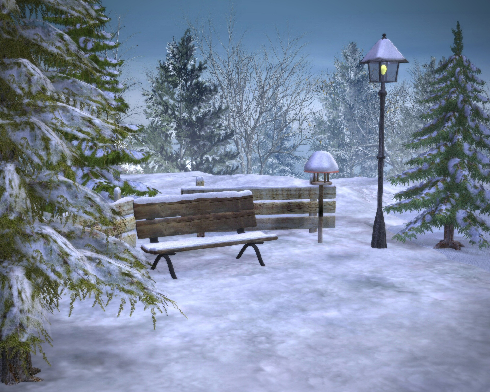
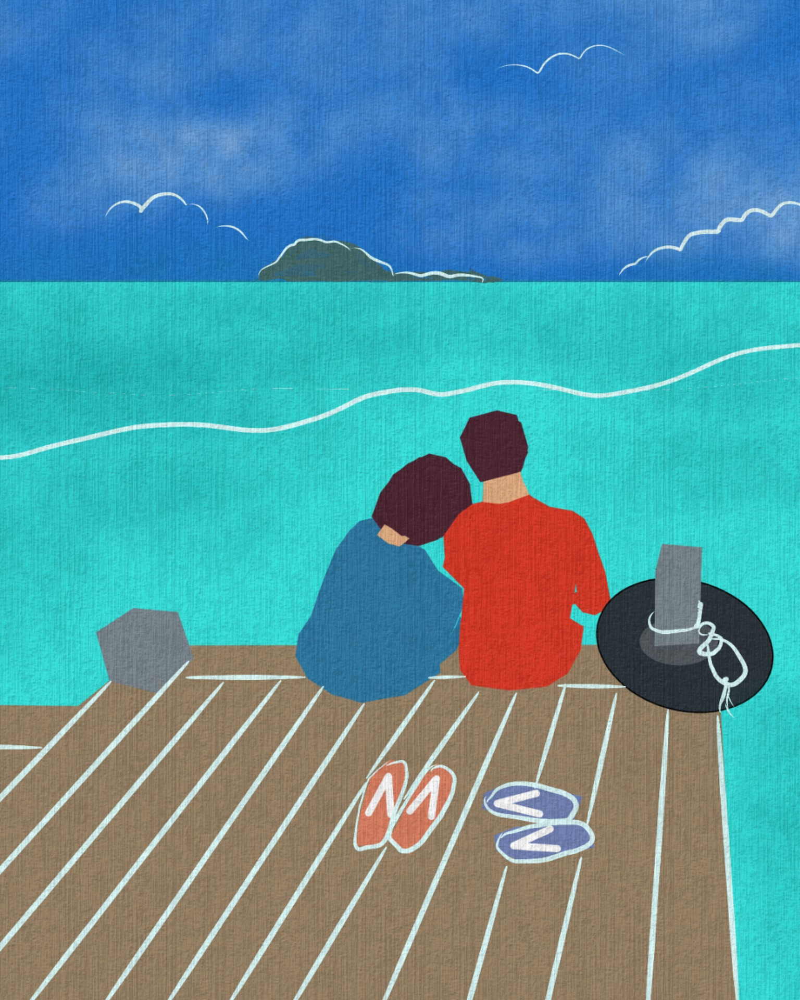

Come to visit our beach in
Bassam. Our historical city.
Have you ever heard about
parc "Abo Kouamékro"?
Please to come to tell us
how you find it.

San-Pédro is a so wonderful
city to visit. Just take decision
to come!!
San-Pédro is a so wonderful
city to visit. Just take decision
to come!!

Do you want to discover Assinie ?
Here is the corner to make
this dream comes true!
Do you want to discover Assinie ?
Here is the corner to make
this dream comes true!